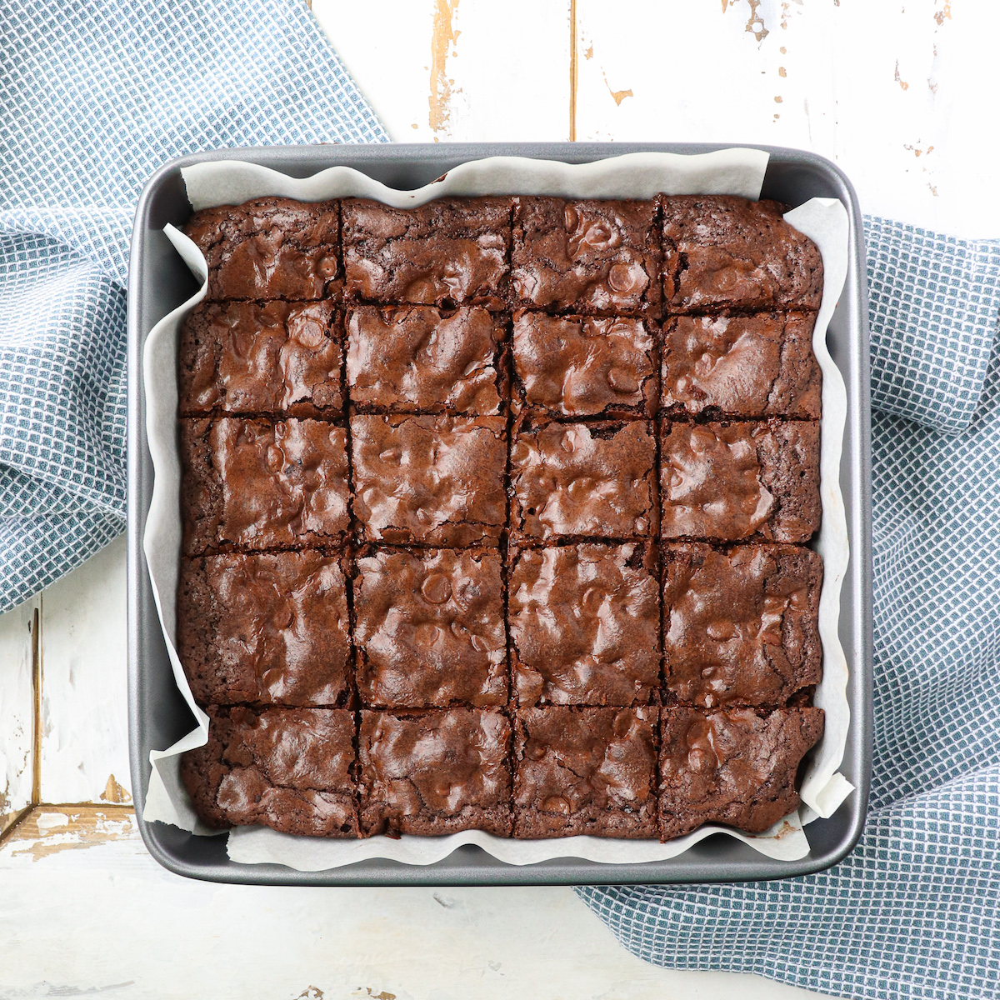
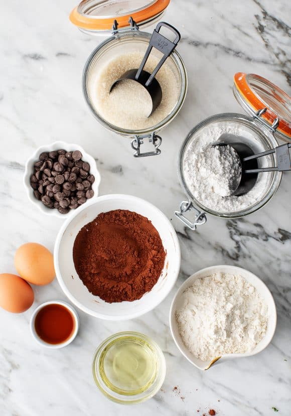
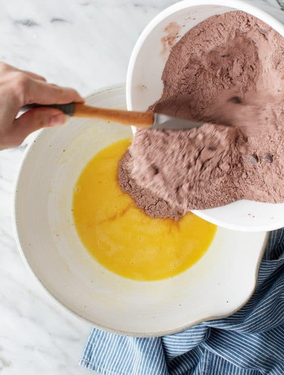
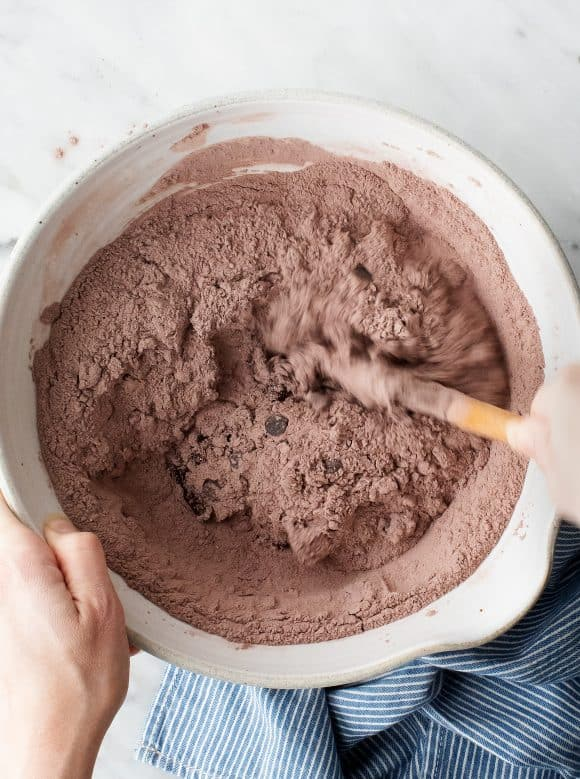
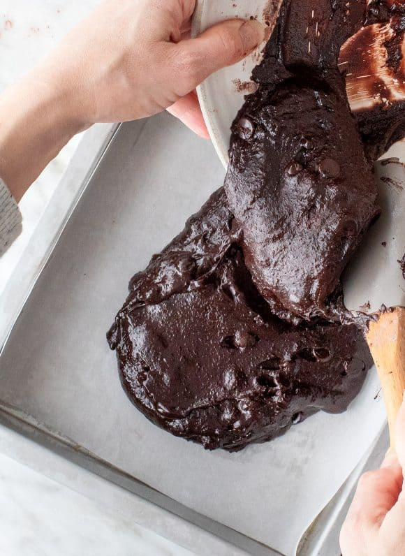
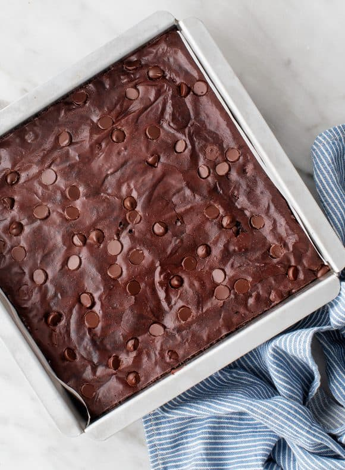

The Best Homemade Brownies

Introduction
Brownies were first invented in 1893 in America. If you have never tried them, they are a like a condensed version of a chocolate cake but with a chewy texture and more of a chocolate flavour. The name comes from the dark brown colour that they have. There are two differnt styles of brownies, "cake-style and "fudge-style", here we will be making "fudge-style" brownies.
Why should you make these brownies?
These brownies will be the best brownies you have ever tried. Here are some reasons why you should make them. They are delicious and very rich. They have a gooey center and crispy edges. Another thing that I love about these brownies is that they aren't overly sweet but still have an amazing chocolate flavour. These are perfect for those who love the gooey center and a crispy corner.
Ingrdients

This recipe makes one 8x8 pan*
- ¾ cup granulated sugar
- ¾ cup all-purpose flour
- ⅔ cup cocao powder
- ½ cup powder sugar
- ½ cup dark chocolate chips
- ¾ teaspoon salt
- 2 large eggs
- ½ cup canola oil or extra virgin olive oil
- 2 tablespoons of water
- ½ teaspoon of vanilla
Instructions:
- Preheat the oven to 325°F. Lightly spray an 8x8 baking dish with cooking spray and line it with parchment paper. Spray the parchment paper so your brownies don't stick to the pan.
- In a medium bowl, combine the sugar, flour, cocoa powder, powdered sugar, chocolate chips, and salt. (the dry ingredients)
- In a large bowl, whisk together the eggs, olive oil, water, and vanilla. (the wet ingredients)
- combine the dry mix over the wet mix and stir until just mixed. Make sure not to over mix the batter.
- Pour the batter into the prepared pan and use a spatula to smooth the top. Bake for 40 to 48 minutes, or until a toothpick comes out with only a few crumbs attached. Keep in mind that the batter will be thick.
Pictures + Steps:

- Combining your wet and dry ingredients

- Carfefully mix together

- Pour the batter in your greased baking dish

- Bake and your brownies are done!